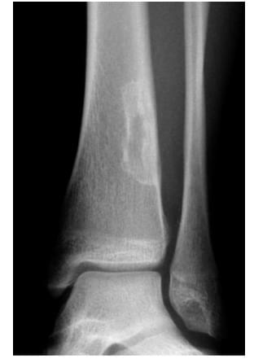
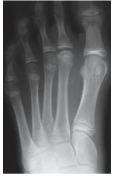

Orto Questões
TARO 2021Câmara escura
Bate o olho.

TARO 2021tumoresA lesão presente na imagem radiográfica a seguir é sugestiva de
Aosteoblastoma
Bcondroblastoma
Costeoma osteoide
Dfibroma não ossificante

TARO 2021nº 39Câmara escura
15 anos.
Dor no pé.
Claudicação.
Qual doença?
Em uma paciente de 15 anos de idade, com dor no pé, claudicação e a imagem radiográfica a seguir, o diagnóstico mais provável é a doença de
Comente a sua letra.
Cabeça do 2º metatarso achatada e esclerótica.
Adolescente, sexo feminino.
Para não trocar na prova:
TARO · TEOT · subespecialidades
Treine grátis: está no nosso perfil.
Câmara escura

TARO 2021tumoresA lesão presente na imagem radiográfica a seguir é sugestiva de
O endereço fecha o diagnóstico:
Conduta: observar.